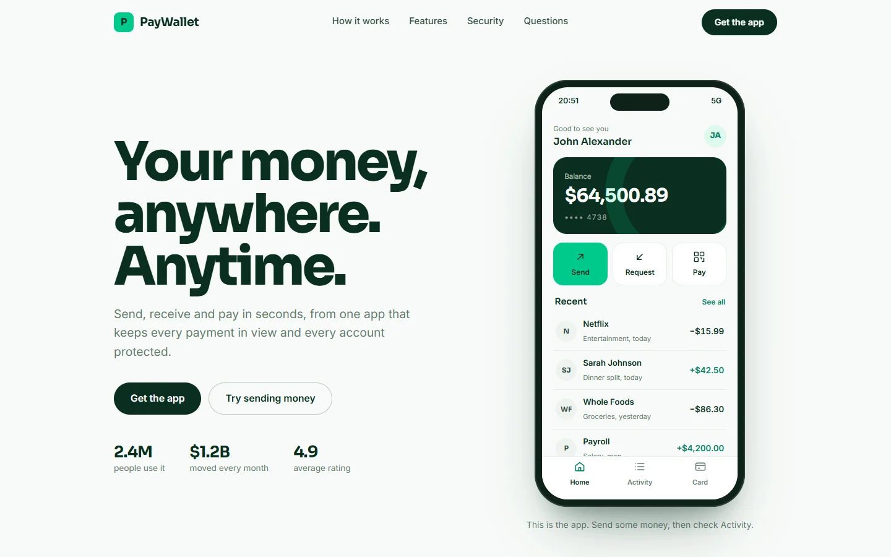
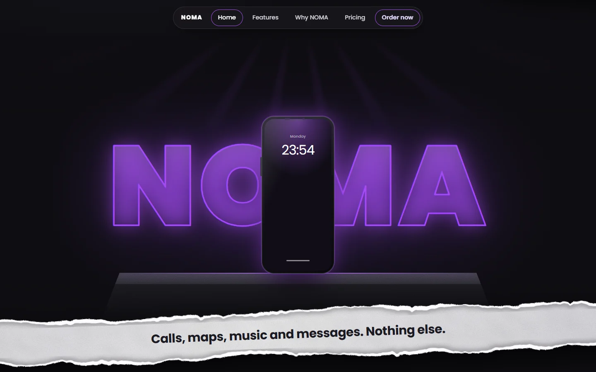
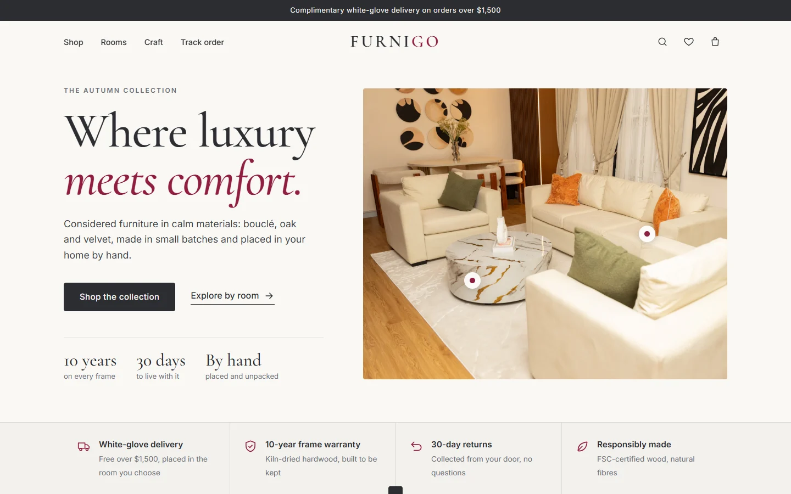
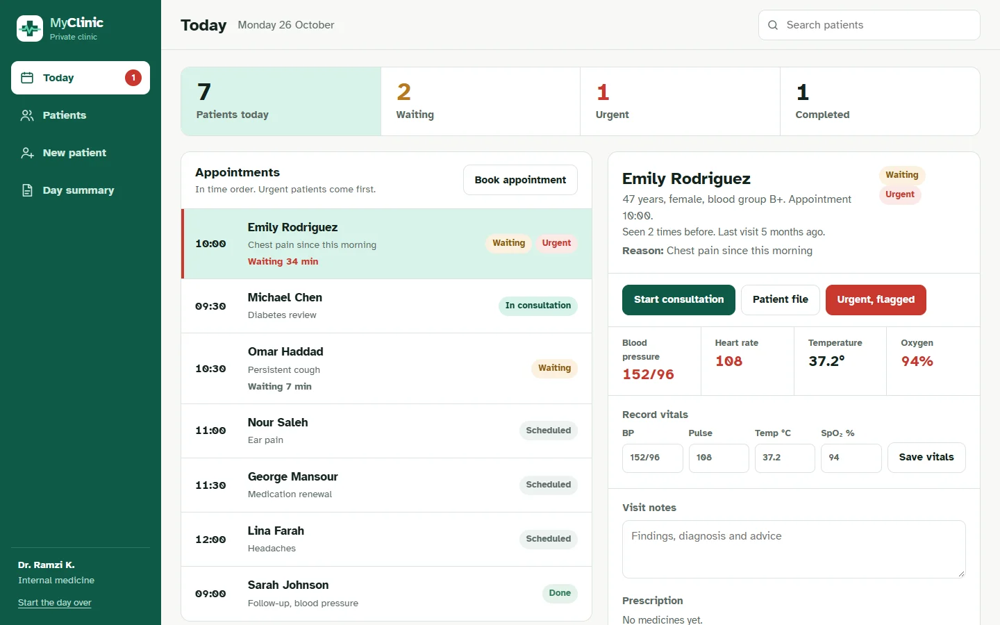
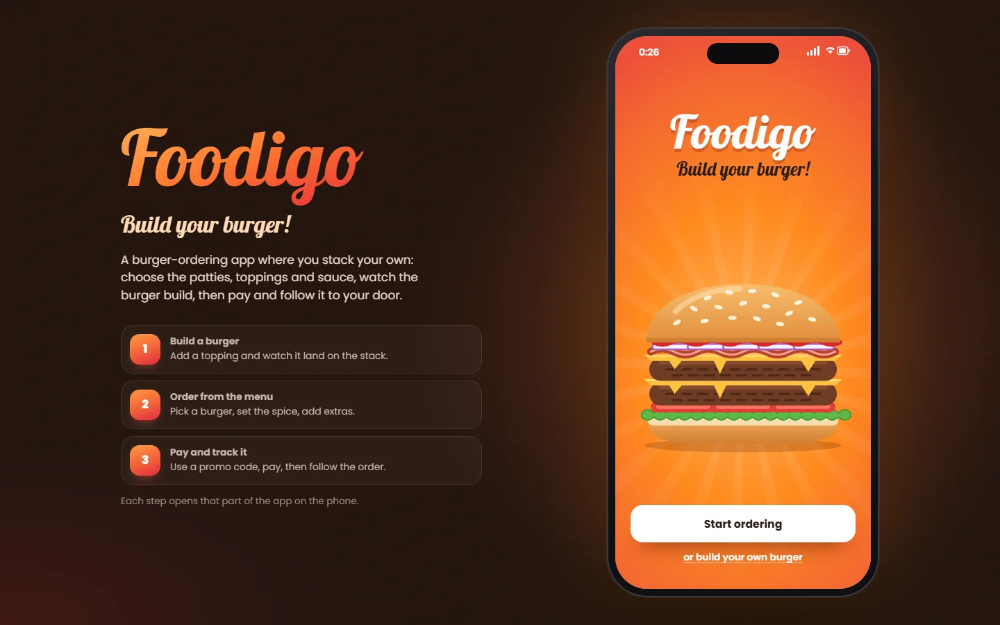

Fintech · Website and app
PayWallet
A money-transfer app and its website. The phone on the page is the working app: send money, freeze the card, watch your spending update.
Five interface designs built as live, working sites rather than screenshots. Each one opens in its own tab and responds to real clicks, taps and typing.

Fintech · Website and app
A money-transfer app and its website. The phone on the page is the working app: send money, freeze the card, watch your spending update.

Consumer tech · Product website
A launch page for a phone that keeps only calls, maps, music and messages. Wake the phone on the page, open its apps, then order one.

E-commerce · Online store
A furniture store you can shop end to end: filter by room, save pieces, choose a finish, check out, then track the order.

Healthcare · Tablet app
A clinic's day on one screen: the waiting room with live wait times, each patient's file and progress, prescriptions, booking and an end-of-day summary.

Food delivery · Mobile app
A burger-ordering app you can use on the page: stack your own burger and watch it build, order from the menu, then pay and track it to your door.